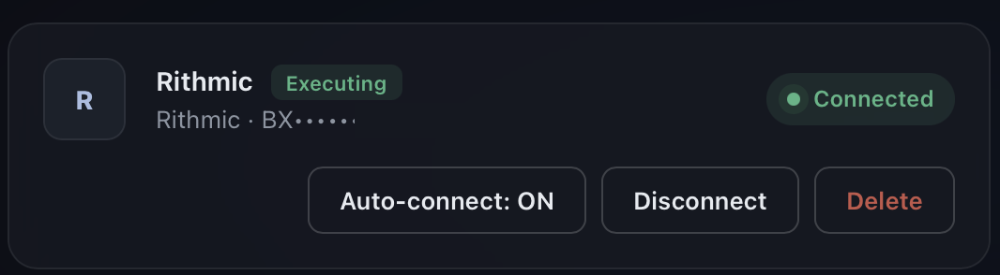

Wire it once. Test it on paper. Then trade.
Five steps, done one time on the machine you trade from. Nothing here risks money: the free tier trades paper only, so you'll see the whole chain fill before a single real order can exist.
Prefer to be walked through by your own AI? Download this guide as plain text and paste it into any assistant - it contains everything on this page, with extra detail.
The chain you're building: TradingView → your machine → your broker.
You'll need
- Your computer
- The Mac app is ready today (M1 or newer); the Windows version is on its way. Use the machine you normally trade from.
- TradingView
- Any plan with webhook alerts - Essential and up.
- A futures prop account
- At a firm that supports Rithmic, with API access enabled. Your firm charges its own API-access fee, paid to the firm directly.
- Tailscale
- A free app, used once in step two - tailscale.com/download.
- Your license key
- Only for going live later. Paper trading needs no key and no card.
Install BridgePit.
Download the Mac app, open the file, drag BridgePit into Applications, and launch it. Your browser opens at 127.0.0.1:8787 - an address that means this computer. Your settings, credentials, and controls live there and answer to no one else.
The first screen asks you to set a password for the dashboard, at least 8 characters. Pick one you will keep: there is no account behind it and no recovery e-mail, so if you lose it the only way back in is deleting the app's auth.json by hand.
Give your machine an address TradingView can find.
Here's the thing this step solves: TradingView lives on the internet, and your computer - on purpose - can't be found from the internet. So we give it one address, for one door, once. A free app called Tailscale does it. Four small moves:
- Install Tailscale and sign in. Download it at tailscale.com/download, open it, and sign in with Google or Apple - the free personal plan is all you need.
- Answer the two macOS questions - the second one properly. First macOS asks to add a VPN configuration: click Allow. Then it says Tailscale would like to use a new network extension, offering OK and Open System Settings. Click Open System Settings, find Tailscale in the list, and switch it on. Clicking OK looks like it worked and doesn't turn anything on - Tailscale then sits there half-installed with nothing to tell you why.
- Open Terminal. Press
⌘ space, type Terminal, press return. A plain text window opens - you'll type exactly one line in it, ever. - Paste this line and press return:
tailscale funnel --bg 8787
https://your-mac.tail1234.ts.net/
|-- proxy http://127.0.0.1:8787Terminal. The first line - yours will show your own machine's name - is your new address. Done; you can close the window.
The first time, you'll probably get a link instead of an address. It looks like https://login.tailscale.com/f/funnel?node=… That is normal: this feature is switched off on new accounts, and Tailscale is asking you to switch it on. Open that link in your browser, approve it, then run the same line again - the second run gives you the address above. Nothing went wrong, and you still only ever type the one line.
That's the whole trick, and you never have to type it again. From now on the app shows your finished webhook address - your new address with /webhook on the end - ready to copy, under Settings → Your webhook:

Settings → Your webhook. Top box: the address alerts go to. Bottom box: the token that proves an alert is yours, kept hidden so a screenshot of this screen cannot give it away. You will not have to type either one.
Is a public address safe? With the setup on this page, yes: through it the app answers alerts and nothing else - and only alerts carrying your token. Your dashboard, settings and broker login are not reachable through it. Set the tunnel up exactly as described here; other tunnelling tools work differently and this guide doesn't cover them.
A saved address is not a live one. Your line is saved for good and you never type it again, but the address only answers while Tailscale is running and serving it - and a Mac that has restarted comes back with neither Tailscale nor BridgePit running until you log in and start them. TradingView fires each alert once and never retries, so an alert sent to a dead address is simply gone, and the one you can least afford to lose is an exit. BridgePit re-tests the address every half minute and says so at the top of the dashboard when it stops answering - but only while the dashboard is open, and nothing reaches your phone. In Tailscale's settings, switch on Launch Tailscale at login.
Connect your broker.
Connections → + Add connection. Enter the Rithmic login your broker or prop firm gave you - Rithmic is the broker BridgePit connects to today - then Save & Connect. The status pill turns green.
Your orders stay on paper until you click "Set as execution" on the connection card. That click is deliberate and it is the one that makes fills real. A connection can sit green and connected for days without ever placing a live order.

Connections. Your login is shown masked. Connect logs in; the pill goes green. Set as execution is the separate click that makes fills real - until you press it, everything is paper.
The green pill records your last successful login, not a live heartbeat. If the broker link drops later the pill can still read Connected - BridgePit tells you through your alerts and writes a CONN_DOWN row in Recent activity, so trust those over the pill.
Credentials are encrypted on your machine with a key that never leaves it, used only to open your broker session. They never touch our servers - we couldn't read them if we wanted to.
Two things to sort out with your firm before you try, because neither is ours to switch on. First, they have to enable Rithmic API access for your account, and they charge their own fee for it - paid to them, not to us. Second, your Rithmic account needs a paid subscription with them: demo and trial Rithmic logins cannot connect at all. That is not a CME market-data licence and it is not something you buy from us - your charts stay on TradingView and BridgePit only sends orders. Paper mode inside BridgePit works regardless, so you can test the whole chain first.
Some firms also have to whitelist BridgePit itself on their Rithmic system, separately from your login. If your first connection is refused on permissions, that is what it means - your password is not the problem. Ask your firm to whitelist BridgePit for your account.
Name your strategy. Wire the alert.
On Strategies, add your strategy. The name is the handshake - your alert must send exactly the same one.
"Contracts per signal" is your size, and it multiplies. BridgePit takes the contract count in the alert and multiplies it by this number - a 1-lot signal at 3 sends 3 contracts. It also refuses any order that would take the net position above it. Leave it at 1 unless you deliberately want to scale, and if your TradingView strategy already trades more than one contract, leave it at 1 or the two multiply and the order is refused. Do not set it to your firm's maximum as a safety ceiling - that is the opposite of what it does.

Your strategies. One row each. Contracts is your size and it multiplies the alert's; the same number is the ceiling any order is checked against before it leaves.
Don't type the alert message. The app writes it for you. Open Settings → Alert setup, pick your strategy, and press Copy block. Your token is already in it, so there is nothing to fill in and nothing to mistype.
Then, in TradingView, open the alert window - the ⏰ alarm-clock icon on the right toolbar, then Create alert. Two rows, one thing on each:

Your TradingView alert window. ① Message - click it, clear what's there, paste the block. ② Notifications - click it, switch on Webhook URL, and paste your address from step two. The condition shown here is only an example of the dialog - set yours to your strategy, as the box above says.
Set the alert's Condition to your strategy itself, not to the indicator or the symbol. {{strategy.order.action}} and {{strategy.order.contracts}} only fill in when the condition is the strategy - otherwise they arrive empty and every alert is refused with qty <= 0.
For reference, this is what Copy block gives you. Six lines, and only the first two are yours:
{
"strategy_name": "Breakout-1m", ← same name as in the app
"data": "{{strategy.order.action}}",
"quantity": "{{strategy.order.contracts}}",
"price": "{{close}}",
"fired_at": "{{timenow}}",
"token": "your-token-from-settings"
}Two of those lines earn their place quietly. fired_at must be {{timenow}} - it is how BridgePit refuses an entry that arrives late; {{time}} is the bar's time and would get every entry refused. And nothing about accounts belongs in this message: which account a strategy trades is set in the app, under the strategy's Account field, with Also run this strategy on for more.
BridgePit trades the instrument you picked on the strategy, not the chart the alert fired from, and always at market. Change the instrument on the strategy, not in TradingView.
Coming from PickMyTrade? /v2/add-trade-data still answers, so the URL edit is all your tooling notices - but the message needs two changes: add "strategy_name" matching the strategy you added in the app, because BridgePit routes by strategy and not by symbol, and swap in your BridgePit token. Easiest path is Copy block above.
Fire one alert. Watch it fill on paper.
Trigger your alert once - or use BridgePit's own Send a test signal button under Settings → Alert setup, which needs no TradingView at all. Then look at the dashboard:

Recent activity. One test signal, four rows: the buy order, its fill, the sell order, its fill. Every fill says (paper), which is what you want to see first.
A FILL row wearing your strategy's name means the whole chain works: TradingView reached your machine, your machine simulated the order. No order from your alerts can reach a real account until you press Set as execution on a connection - until then every fill is paper, by design.
One thing does reach a connected account regardless: the end-of-day flatten. From 15:55 ET it cancels working orders and closes positions on any broker session BridgePit is connected to - subscription or not, execution or not - because an unpaid bill must never leave a position open overnight. If you are also trading that account by hand, disconnect it here or switch the end-of-day flatten off before you paper-test.
When you're ready, paste the license key from your purchase email under Subscription:

Choose your plan. The key activates on this machine - no account to create.
BridgePit will not let you go live until you have proved it can reach you. Clicking Set as execution is refused, with the reason, until both of these are done:
1. In Settings → Where we reach you, set up Telegram or e-mail. Then in Settings → Alert delivery, click Send test message, and once it arrives click I received it.
2. In Settings → What BridgePit depends on, click Read the list, then I have read this.
This is deliberate: a program that places your orders while you are away is no use if it cannot tell you something went wrong. Have a Telegram account or an e-mail app password ready before you start.
Before your first live session: open Settings → Your risk limits and set both numbers that ship blank: Daily stop ("Stop for today after losing $…"), at your firm's daily limit or tighter, and Drawdown stop, how far below your best balance you will let the account fall. A blank limit is no limit, and for a funded account the trailing drawdown is the rule that ends it. The end-of-day flatten (15:55 ET unless you change it), per-strategy contract caps, duplicate rejection, and the dashboard kill-switch are already on.
Every failure says its name.
| You see | It means |
|---|---|
| a login.tailscale.com link instead of an address | Normal on a new account - the feature is off until you switch it on. Open the link, approve it, then run the same line again. |
| command not found: tailscale | Tailscale is installed but Terminal can't see it. Use the long form instead: /Applications/Tailscale.app/Contents/MacOS/Tailscale funnel --bg 8787 |
| bad token | The token in your alert doesn't match Settings → Your webhook. Copy it from there again - or just use Copy block under Alert setup, which fills it in for you. |
| qty <= 0 | The alert carried no contract count. {{strategy.order.contracts}} only fills in when the alert's Condition is your strategy itself, not the indicator or the symbol. Re-create the alert with the strategy as the condition. |
| unknown strategy | The alert's strategy_name doesn't exactly match a strategy in the app. Case and spaces count. |
| REJECT · burst duplicate | Working as intended - the same signal arrived twice within seconds and the copy was refused. |
| nothing appears at all | TradingView can't reach your machine. Run tailscale funnel status - it should say Funnel on and list your address. Also check the URL in TradingView ends in /webhook. If Tailscale says it's connected but nothing arrives, the address can still be down: connected and serving are two different things. |
| fills say (paper) after subscribing | Almost always the missing click: open Connections and press Set as execution on your connection. Live needs that, a green connection, and an activated key. |
| Set as execution is refused | You have not proved BridgePit can reach you yet. Set up Telegram or e-mail under Settings → Where we reach you, send the test message and confirm you got it, then read the dependency list. The refusal names which one is missing. |
| Rithmic refused this app for your account | Not a password problem. Your firm has to enable BridgePit on their Rithmic system for your login - ask them to whitelist it. (Or a previous session is still open: wait a minute and reconnect.) |
| the pill says Connected but nothing fills | The pill shows your last successful login, not a live link. Look for a CONN_DOWN row in Recent activity, and trust your e-mail or Telegram alert over the pill. |
| BridgePit cannot start… port 8787 | Another program on this Mac holds that port. Close it - if it is an older copy of BridgePit, quit it from its own Settings page - or move BridgePit to a different port and use the new one everywhere in this guide. |
Stuck anyway? support@bridgepit.com - paste the row from Recent activity if there is one, and you'll get a specific answer.
Write to us directly.
support@bridgepit.com - it lands with the two people who built BridgePit, not a ticket system. We answer fast: we're spread across European and Asian hours, so someone is awake whenever you write.
Account or license problem - key never arrived, billing looks wrong? Same address; include the email you purchased with and we fix it directly.
One habit, from us: BridgePit executes, you supervise. Keep the machine on, lid open, and on the internet during your hours. Glance at the dashboard the way you'd glance at a position. Quit only when you're flat. Your alerts, your broker, your IP - and you, still the trader.